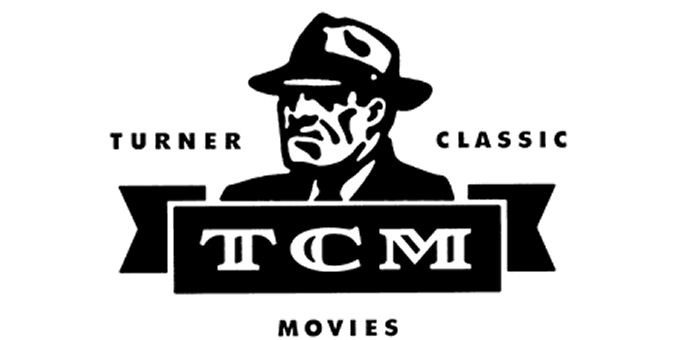

Tcm.com/activate
Turner Classic Movies or TCM is founded by Ted Turner in 1994 and is famous for its classic movie collection. TCM is mostly for the old generation and conventional film fans. It is available on most streaming devices including Apple TV, Amazon Fire TV, and Roku in order to increase its audience with its large collection of movies. You can stream WATCH TCM on Amazon Fire TV. Here’s how to sign up at tcm.com/activate, download, install, and start streaming WATCH TCM using your Amazon Fire TV.

Activating TCM on an Amazon Fire TV: How can I do that?
- Firstly, Search for TCM in the Amazon app store’s search field after opening it.
- Secondly, In order to start the software downloading on your device, click the install button.
- Go to the sign-in area and enter your login information.
- Your TV screen will display an activation code.
- Using the browser on your smartphone or computer, go to the website tcm.com/activate.
- The Amazon Fire TV is selected from the devices menu.
- Once you’ve entered the activation code, press the submit button.
- Enter your TV provider account information to log in, and then use your Amazon Fire TV to watch TCM movies.
How do you activate TCM On an Android TV?
- Firstly, the Google Play Store will open when you tap it on your Android TV.
- Secondly, Look for and download the TCM app.
- Open the TCM channel app now.
- Copy the activation code that appeared on the TV.
- Use the mobile browser to go to the tcm.com/activate page.
- On your Android TV, enter the activation code to access all of TCM’s content.